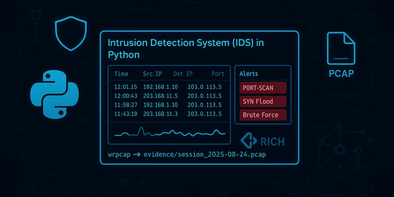
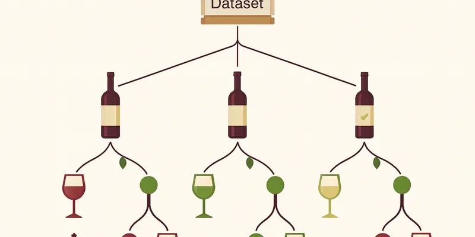

~$ whoami
Bar Sberro
Identity & Cloud Security
I run identity, endpoint and cloud security operations at Earnix, a fintech of ~450 employees, on Microsoft Entra ID, Conditional Access, Intune and Purview, and I build and document detection tools in the lab.
B.Sc. Computer Science, Cybersecurity & AI (HIT, 2026) · Central District, Israel · Open to junior Identity / Cloud Security and SOC / Detection roles.

01 / About
About Me
I work in security operations at Earnix, a ~450-employee fintech, running identity, endpoint and cloud security: Microsoft Entra ID and Conditional Access, MFA/SSO, Intune and Kandji, Microsoft Purview DLP, and joiner-mover-leaver automation with PowerShell and the Microsoft Graph API. I hold a B.Sc. in Computer Science from HIT (2026), Cybersecurity & AI specialization, with a 96 final specialization-year average. Off the clock I build and document security projects, an IDS, a deception engine and an LLM red-teaming framework, all in isolated lab environments.
Cloud & Identity
Detection & Analysis
Programming
AI & Data
02 / Experience
Experience
IT Specialist, Identity, Endpoint & Cloud Security Operations
Earnix · Fintech, ~450 employees- Administer Microsoft Entra ID for ~450 users: Conditional Access policies enforcing MFA/SSO, blocking legacy authentication, and gating access on Intune / Kandji device compliance as Zero Trust controls.
- Automate the full joiner-mover-leaver identity lifecycle with PowerShell and the Microsoft Graph API across Active Directory, Entra ID, M365 and Exchange, enabling same-day offboarding.
- Monitor Entra ID sign-in and audit logs for anomalous and risky sign-ins; investigate and escalate true positives.
- Enforce endpoint compliance via Intune (Windows) and Kandji (macOS); operate Microsoft Purview DLP; administer VPN, firewall rules and network segmentation.
Computer Technician
Malam Team- Troubleshot TCP/IP, DNS and DHCP and performed endpoint hardening across client environments.
03 / Education
Education
B.Sc. Computer Science, Cybersecurity & AI specialization
Holon Institute of Technology (HIT)Selected grades
Training & Courses
04 / Projects
Projects

SniffGuard
Real-time intrusion detection system in Python and Scapy that detects four stealth scan types (SYN, FIN, NULL, XMAS), mapped to MITRE ATT&CK T1046. Live alerting dashboard with automated PCAP capture for Wireshark forensic analysis. Built and tested in an isolated lab.
View Project
LLM Red-Teaming Framework
Automated adversarial framework with a multi-agent judge-and-mutator architecture that probes LLM guardrails. Evaluated on JailbreakBench across four harm categories, aligned to the OWASP LLM Top 10, alongside an ML pipeline classifying malicious versus benign network traffic.
View Project
Eviation Cyber Platform
Team capstone security platform graded 100, with an admin dashboard, API gateway and real-time telemetry. I built the deception engine layer, honeypots, tarpits and dynamic decoy dashboards, generating attacker-interaction intelligence and early-warning signals.
View Project
Vinyl Album Identification
Matches low-quality CCTV footage of vinyl albums to catalog images using ResNet50 and a Siamese network with Triplet Margin Loss. Augmented training with GLIGEN-generated synthetic images, reaching 77% Top-1 accuracy.
View Project
Wine Classification
Supervised machine-learning pipeline classifying wine types by chemical properties with a Random Forest model, including full exploratory analysis and feature-importance evaluation.
View Project05 / Security Write-ups
SEED Labs
6 / 6 labs completed & documentedHands-on network and system security labs from the SEED (Security Education) curriculum (Syracuse University), completed as a 3-person team in isolated VM environments. Every lab is documented in depth with screenshots and full technical analysis, including beyond-requirements extensions.
Packet Sniffing & Spoofing
Dual implementation in Python/Scapy and C/libpcap: packet capture, BPF filtering, IP spoofing and live traffic manipulation at both high-level API and raw kernel level.
- Packet sniffing with BPF filters (ICMP, TCP port 23, subnet CIDR) in Python and C
- ICMP and UDP spoofing with forged source IPs via Raw Sockets
- Custom Traceroute built from scratch using incremental TTL
- Combined sniff-and-spoof: live ICMP Echo Reply injection on LAN
- Beyond Full C pipeline (pcap + Raw Sockets), promiscuous-mode and Reverse Path Filtering analysis
ARP Cache Poisoning
Full ARP poisoning attack chain: from all three cache-corruption methods to transparent MITM on live Telnet and Netcat sessions with active payload modification.
- 3 poisoning vectors: ARP Request (op=1), Reply (op=2), Gratuitous broadcast
- Two-way continuous MITM: both victims simultaneously redirected to attacker
- Telnet MITM: real-time replacement of alphabetic characters
- Netcat MITM with exact TCP payload-length preservation
- Beyond arpspoof + ettercap one-command MITM; documented Dynamic ARP Inspection defenses
IP / ICMP Attacks
Advanced IP-layer attacks: fragmentation abuse, ICMP control-plane hijacking, kernel-memory DoS and multi-subnet routing manipulation.
- IP fragmentation with precise Offset/Flags math; overlapping fragment exploit
- Ping of Death: crafted 65,535+ byte payload split across fragments
- Fragment Flood DoS in Python/Scapy and C/Raw Sockets
- ICMP Redirect: hijacked victim routing cache to reroute traffic
- Beyond Strict vs Loose RPF bypass, IP-in-IP encapsulation, parallel C DoS
Local DNS Attacks
End-to-end DNS attack surface from hosts-file hijacking to multi-section cache poisoning, including Bailiwick Rule bypass research and AAAA race-condition exploitation.
- BIND9 setup: recursive resolver + authoritative zone for example.com
- Hosts-file poisoning: redirected www.bank32.com to attacker IP
- Direct DNS spoofing: sniff query then inject reply before real server
- Cache poisoning with forged A record and Authority-section injection
- Beyond Additional-section attacks, AAAA/IPv6 race condition, DNSSEC theory
Remote DNS Cache Poisoning
The Kaminsky Attack: remote DNS cache poisoning without LAN access, exploiting 16-bit Transaction ID entropy and source-port predictability in unpatched resolvers.
- Kaminsky Attack: flood resolver with spoofed replies for random subdomains until ID matches
- Source-port randomization analysis: fixed port reduces entropy to 16 bits
- Custom attacker DNS server poisoned as NS for example.com
- Full remote resolver cache poisoning without LAN access
- Beyond DNSSEC implementation to defeat the attack; 2008 disclosure case study
RSA Public-Key Encryption & Signatures
RSA built from scratch with the OpenSSL BIGNUM API: private-key derivation, encryption, decryption, digital signatures and manual verification of a live X.509 certificate.
- Derived private key
dfrom(p, q, e)viaBN_mod_inverse - Encrypt and decrypt round trip
- Signature avalanche demo: a single digit change fully decorrelates the signature
- Manually verified a live X.509 certificate end to end (CA modulus to SHA-256 compare)
- Beyond Factoring attack via FactorDB: recovered
dfrom(n, e)on a 256-bit modulus